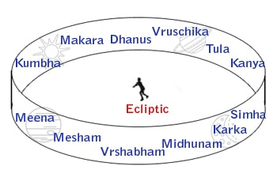
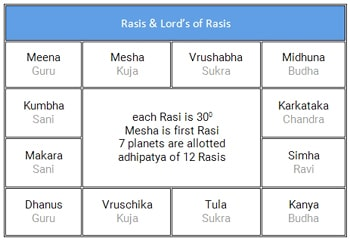
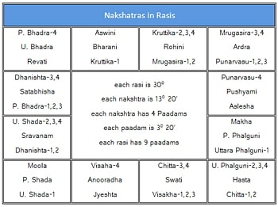
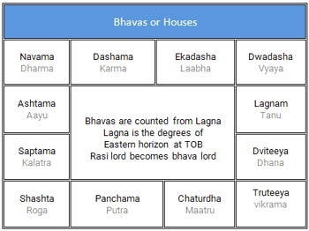
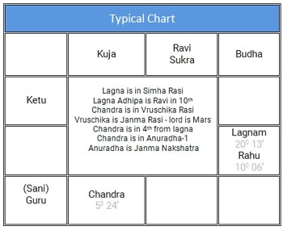

 భూకేంద్ర సిద్ధాంతము ప్రకారము, ఆకాశములో సూర్య, చంద్ర, కుజ, బుధ, గురు, శుక్ర, శని అనబడే సప్త గ్రహములు రవి మార్గము లేక కాంతి వృత్తము లేక భచక్రము అనే ఒక వృత్తాకార పరిధిలో తిరుగుతూ ఉంటాయి. దీని వెడల్పు సుమారు 16 డిగ్రీలు ఉంటుంది. చుట్టు కొలత 360 డిగ్రీలు.
పైన చెప్పబడ్డ సప్త గ్రహములే కాక, రవి మరియు చంద్రుని మార్గములు ఖండించుకునే రెండు బిందువులను ఛాయా గ్రహములు అనే రాహు కేతువులుగా పరిగణించారు. రాహు కేతువులతో కలిపి మొత్తం 9 గ్రహములు.
రవి మార్గముయొక్క మొత్తం 360 డిగ్రీల భాగాన్ని, 12 రాశులుగా విభజించడమైనది. ఒక్కో రాశి నిడివి 30 డిగ్రీలు ఉంటుంది. ఈ రాశులకు ఆ పరిసరములలో కనిపించే నక్షత్ర గుంపుల ఆకార ఆధారముగా పేర్లు ఇవ్వబడ్డాయి. మేషము, వృషభము, మిధునము, కర్కాటకము, సింహము, కన్య, తుల, వృశ్చికము, ధనుస్సు, మకరము, కుంభము, మీనము – ఈ 12 రాశుల పేర్లు.
సప్త గ్రహములైన రవి, చంద్ర, కుజ, బుధ, గురు, శుక్ర, శనులకు 12 రాశుల ఆధిపత్యము ఇవ్వబడింది. రవి - సింహ రాశికి; చంద్రుడు - కర్కాటక రాశికి; కుజుడు - మేష, వృశ్చిక రాశులకు; బుధుడు - మిధున, కన్య రాశులకు; గురువు - ధనుర్మీన రాశులకు; శుక్రుడు - వృషభ, తులా రాశులకు; శని - మకర, కుంభములకు అధిపతులు. మేష రాశి, అశ్విని నక్షత్ర ప్రారంభము మొదటి రాశిగా తీసుకోబడినది.
మొత్తం 27 నక్షత్రములు ఉంటాయి. ఒక్కొక్క నక్షత్రము నిడివి 13 డిగ్రీల 20 నిముషములు. నక్షత్రములను నాలుగు పాదములుగా విభజిస్తే, ఒక్కొక్క పాదము నిడివి 3 డిగ్రీల 20 నిమిషములుంటుంది. గనుక, ఒక్కొక్క రాశిలో ఉన్న మొత్తం 30 డిగ్రీలలో 9 నక్షత్ర పాదములు ఉంటాయి. మనం జన్మించినప్పుడు చంద్రుడున్న నక్షత్రం జన్మ నక్షత్రం. చంద్రుడున్న రాశి జన్మ రాశి. జన్మ నక్షత్రం అధిపతితో వింశోత్తరి దశ ఆరంభం అవుతుంది.
ఈ 27 నక్షత్రములను తొమ్మిదేసి నక్షత్రముల చొప్పున, మూడు నవకములుగా విభజించి, 9 గ్రహములకు నక్షత్ర ఆధిపత్యం ఇవ్వబడింది. కేతు , శుక్ర , రవి , చంద్ర , కుజ , రాహు , గురు , శని , బుధ – గ్రహములు ఒక్కొక్క నవకములో , అశ్విని లగాయతు నక్షత్రాధిపతులు అగుదురు. మూడు నవకములలో ఉన్న నక్షత్రముల పేర్లు – 1. అశ్వని, భరణి, కృత్తిక, రోహిణి, మృగశిర, ఆరుద్ర, పునర్వసు, పుష్యమి, ఆశ్లేష 2. మఖ, పుబ్బ, ఉత్తర, హస్త, చిత్త, స్వాతి, విశాఖ, అనూరాధ, జ్యేష్ట 3. మూల, పూర్వాషాడ, ఉత్తరాషాడ, శ్రవణం, ధనిష్ట, శతభిషం, పూర్వాభాద్ర, ఉత్తరాభాద్ర, రేవతి.
ఒక రోజు సూర్యోదయము నుండి మరునాటి సూర్యోదయము వరకు ఉన్న కాలము సుమారు 24 గంటలు అయిన దిన ప్రమాణము. సూర్య గ్రహము, రవి మార్గము చుట్టూ తిరగటానికి పట్టే సమయాన్ని కూడా 12 భాగములు చేస్తే 12 భావములు అవుతాయి. ఒక రోజులో సూర్యుడు ఒక్కొక్క భావములో రెండు గంటలు ఉన్నట్లౌతుంది. ఒక వ్యక్తి జన్మించినపుడు, తూర్పు క్షితిజము ( eastern horizon) , రవి మార్గము ఖండించుకునే బిందువుని లగ్నము అంటారు. ఈ లగ్నము ప్రధమ భావముగా తీసికొనబడుతుంది. ఈ విధంగా లగ్నాతు 12 భావములతో జాతకుల ఫల విశ్లేషణ చేయడం జరుగుతుంది.
రవి మార్గం మొత్తం 360 డిగ్రీలలో 27 నక్షత్రాలు ముఖ్యంగా ఉన్నాయి అన్నారు. ఈ నక్షత్ర గుంపులను 12 రాశులు చేసారు. ఆపైన రోజులో 24 గంటలను రెండు రెండు గంటల చొప్పున మళ్లి 12 భాగాలు చేసారు. వాటిని లగ్నాతు 12 భావాలు అన్నారు.
 ఇక్కడ రవి వృషభ రాశిలో ఉన్నాడు. అంటే అది సుమారు మే 15 నుండి జూన్ 15 అన్నమాట. అది మే 20 అనునుకుందాం. ఆ రోజు సూర్యోదయ సమయం 6:00 అనుకుందాం. సూర్యోదయం అంటే ఏమిటి? సూర్యుడు తూర్పు దిక్కున లేచి భూమి పైకి కనబడటమే. అంటే ఆ రోజు 6:00 కి పుట్టిన వ్యక్తికి లగ్నం అదే వృషభం అవుతుంది. లగ్నంలో సూర్యుడు ఉన్నట్లే. సుమారు రెండు గంటల తరువాత పుట్టిన వ్యక్తికి లగ్నం మిధునం అవుతుంది. రవి వ్యయంలో ఉంటాడు. ఇక్కడ ఇచ్చిన బొమ్మలో రవి దశమంలో ఉన్నాడు. అంటే జన్మ సుమారు 12:00 నుండి 14:00 మధ్య జరిగినట్లు.
ఒక వ్యక్తి జన్మించినపుడు అతని పూర్వ జన్మ సుకృతముని బట్టి వివిధ గ్రహములు వేర్వేరు నక్షత్రములలో లేక రాశులలో లేక లగ్నాతు భావములలో ఉండటము జరుగుతుంది. ఈ గ్రహ స్థితి వ్యక్తి యొక్క ప్రారబ్ద కర్మను సూచిస్తుంది. మన కర్మ ప్రకారము శుభా శుభ మిశ్రమ ఫలితములను పొందుతాము. ఇవి ఎప్పుడు అనుభవంలోకి వస్తాయి అంటే, దశల ప్రకారం వస్తాయి. ఆపైన ఆ సమయంలో గోచారం అనబడే ప్రస్తుత గ్రహ చారం కూడా చూడాలి.
మనం ఏ గుడికో వెళతాము. పూజారికి మన పిల్లల నక్షత్రం చెబుతాము, లేక మన ఇంటికి పూజ చేయించడానికి బ్రాహ్మణుడు వస్తే మన పిల్లల నక్షత్రం చెబుతాము. వెంటనే అయ్యో ఏలినాటి శని అంటారు. వాళ్ళు మన జాతకంలో జన్మ రాశి లేక చంద్ర స్థిత రాశి నుండి గోచారం గురించి మాట్లాడుతున్నారు అన్నమాట. గోచారం అంటే తత్కాల గ్రహ స్థితి.
నిర్వచనం: మన జన్మ రాశి లగాయతు, వివిధ గ్రహములు ఈ క్రింద చెప్పబడిన స్థానములలో ఉన్నపుడు శుభ ఫలితములు జరుగును. మిగతా
స్థానములలో అశుభ ఫలితములు జరుగవచ్చు.
రవి - 3 , 6, 10, 11 ; చంద్ర - 1, 3, 6, 7, 10 , 11
బుధుడు- 2, 4, 6, 8, 10, 11 ; గురువు - 2, 5, 7, 9, 11
శుక్రుడు- 6, 7, 10 కాకుండా మిగతావి, అంటే 1,2,3,4,5,8,9,11,12
కుజుడు, శని , రాహు, కేతు - 3, 6 , 11
నిర్వచనం ప్రకారం గోచారం చంద్రాతు చూడాలి అని ఉన్నప్పటికీ, ఈ రోజులలో చాలా మంది జ్యోతిష్యులు లగ్నాతు కూడా చూస్తున్నారు.
గ్రహములు ఒక రాశిలో ఉండే సమయం: చంద్రుడు – రెండున్నర రోజులు, బుధుడు - ఒక నెల, శుక్రుడు - ఒక నెల, రవి – ఒక నెల, కుజుడు - నెలన్నర, గురువు - సంవత్సరం, రాహువు మరియు కేతువు - ఒకటిన్నర సంవత్సరం, శని రెండున్నర సంవత్సరములు. గోచార ఫలితాలకి ముఖ్యంగా నెమ్మదిగా కదిలే గురు శనుల మరియు రాహు కేతువుల గోచారం చూడటం జరుగుతుంది.
డబుల్ ట్రాన్సిట్: గోచార శని తన 1, 7, 3, 10 దృష్టులతోనూ మరియు గోచార గురువు తన 1, 7, 5, 9 దృష్టులతోనూ ఇద్దరూ జాతక చక్రంలో ఒక్కటే భావాన్ని ప్రభావితం చేస్తే, దాన్ని డబుల్ ట్రాన్సిట్ అంటారు. ఆసమయంలో ఆ భావానికి సంబంధించిన విషయం జరిగేటందుకు, బాగా అవకాశముంటుంది.
మూర్తి నిర్ణయం: గోచారంలో ఉన్న గ్రహాలకి నిర్వచనం ప్రకారం వాటి స్థితి బట్టి మేలు లేక కీడు చేస్తాయి అని చెప్పబడింది. మరి వాటి బలా బలాల సంగతి ఏమిటి అంటే, మూర్తులని బట్టి చెప్పారు. ఇవి కొన్ని పంచాంగాలలో ఇస్తారు. గోచారరీత్యా, గ్రహము సువర్ణ లేక రజత మూర్తి అయితే, అశుభ స్ఠానములందున్ననూ శుభములే ఇచ్చును. తామ్ర లేక లోహ మూర్తి అయినచో, శుభ స్థానములందున్ననూ, అశుభ ఫలితములే ఇచ్చును.
రాశిలో స్థితి గురించి:
నిర్వచనం ప్రకారం జన్మ రాశి నుండి అని చెప్పారు బాగుంది, మరి రాశిలో ఉన్న కాల మంతా ఫలితం ఇస్తారా అంటే, మన వాళ్ళు దానికి
తేడాలు చెప్పారు.
ఆది గతౌ ఫలదౌ రవి భౌమౌ, మధ్య గతౌ ఫలదౌ గురుశుక్రౌ
అంత్య గతౌ ఫలదౌ శని చ౦ద్రౌ, సర్వ గతౌ ఫలదౌ బుధ రాహూ. ||
ఫలితం:
గోచార రీత్యా జన్మ రాశి నుండి పన్నెండు రాశులలో నవగ్రహములు సంచరించేటపుడు కలుగు ఫలితాలు చెప్పబడ్డాయి. ఉదాహరణకి గురు సంచార ఫలితాలు ఇక్కడ ఇవ్వబడ్డాయి.
గురు చంద్రులు కలిస్తే గజ కేసరి యోగం కదా, మరి జన్మ చంద్రుని నుండి గోచార గురువు 1 లో ఉంటె దేశ త్యాగం ఏమిటి అని అడగ కూడదు. ఇవ్వబడ్డాయి అంతే.
గోచార నిర్వచనం ప్రకారం, జన్మ చంద్రుని నుండి గరువు 2,5,7,9,11 లలో శుభం చేస్తాడు అని గుర్తు పెట్టుకోవాలి. అంతే.
దేశ త్యాగం , విత్తం లాభం అనర్ధం ధన నాశనం
సంపద , క్లేశం , ఆరోగ్యం , ధన హానిం ,ధనాగమం
పీడనం లాభ నష్టంచా క్రమేణ కురుతే గురుః
తాత్పర్యము : గురుడు ద్వాదశ రాశులలో సంచరించు సమయములో 1 - దేశ త్యాగము 2 - ధన లాభము 3 - కార్య హాని 4 - ధన నాశనము 5 - సంపద 6 - దుఃఖము 7
- ఆరోగ్యము 8 - ధన హాని 9 - ధనాగమము 10 - ఆయాసము 11 - లాభములను 12 - నష్టములను కల్గించుచున్నాడు .
ఉపయోగాలు:
జన్మ రాశి లగాయతు వివధ గ్రహ సంచారం బట్టి, రోజు వారి ఫలితాలు, వారానికి, నెలకి, సంవత్సరానికి సైతం చెప్పబడ్డాయి. సంవత్సర ఫలితాలు ఉగాది రోజు తెలుసుకోవడం
ఆనవాయితి. ఈ ఫలితాలు వ్యక్తులకు మరియు దేశానికి సైతం విడిగా చెప్పబడతాయి.
జ్యోతిష్యులు జాతక చక్రంలో వివధ రాశులలో, వివిధ భావములలో, వివధ గ్రహముల స్థితిని బట్టి, వాటి బలాబలాలను బట్టి వ్యక్తికి ఏమి రాసి పెట్టి ఉందొ చూస్తారు. తరువాత
దశలను బట్టి ఆ యా ఫలితాలు ఎప్పుడు జరుగుతాయో ఊహిస్తారు. ఆ పైన గోచారం జన్మ రాశి నుండే కాక లగ్నాతు సైతం చూసి ఖచ్చితమైన
సమయ నిర్ణయం చేసే ప్రయత్నం చేస్తారు.
ఏల్నాటిశని: మన జన్మ రాశినుండి గోచార శని 12 , 1, 2 స్థానములలో సంచరిస్తుంటే దానిని ఏలినాటి అంటారు. ఒక్కొక్క రాశిలో శని రెండున్నర సంవత్సరములు ఉంటాడు కనుక, ఇది మొత్తం ఏడున్నరేళ్లు ఉంటుంది. గోచార శని జన్మ రాశి నుండి అష్టమంలో ఉంటే అష్టమ శని అని, చతుర్ధంలో ఉంటే అర్ధాష్టమ శని లేక కంటక శని అని అంటారు. కొందరు శని, జన్మ చంద్రుని స్పుటము నుండి 45 డిగ్రీలు అటు ఇటు ఉండగా ఏల్నాటి శనిగా తీసుకుంటారు.
ఇలా ఈ స్థానాల గురించే దిగులుపడవలసిన అవసరం లేదు. శని 3,6,11 లలో మాత్రమె మేలు అని ముందే చెప్పారుగా. ఏమి, దశమంలో ఉంటె అంత కీడు లేదా? ఈ రోజులలో వృత్తికే ప్రాముఖ్యత ఎక్కువ కదా. జాతకంలో గ్రహ స్థితులు, దశలు అనుకూలంగా లేకపోతే, జన్మ రాశి లగాయతు దశమంలో ఉన్న గోచార శని మేలు చేయడు కదా.
ముగింపు:
గోచారం గురించి విస్తృతంగా శాస్త్రం అభివృద్ది చేసారు. అవే గ్రహాలు, రాశులు అయినప్పటికీ ఫలిత నిర్ణయంలో జ్యోతిష్యానికి గోచారానికి తేడాలు
కనిపిస్తున్నాయి (పైన ఫలితములు చదవండి). కాబట్టి, ఈ గోచార శాస్త్రం విడిగా అభివృద్ది చెందింది అనుకోవచ్చు.
నెమ్మదిగా కదిలే గురు, రాహు, కేతు, శనుల గోచారం గుర్తుపెట్టుకోవడం సులభం. అందుచేత, మీ జన్మ రాశి చెబితే దాన్ని బట్టి ఫలితాలు చెప్పడం సులభం. అందుకే ఉధృతంగా
అందరూ ఏలి నాటి శని గురించి, సంవత్సర ఫలితాల గురించి చెప్పేస్తూ ఉంటారు. యు ట్యూబ్ లో ఇదే జ్యోతిష్యం అన్నట్లు బల్లగుద్ది చెప్పేస్తున్నారు. జాగ్రత్త. ముఖ్యంగా ఏలి నాటి శని
గురించి గోప్పగా మాట్లడేసి, ఇదే జ్యోతిష్యం, ఇదే మీ ఖర్మ అని, మీసాలు తిప్పెవారి విషయంలో జాగ్రత్త అవసరం.
సరైన జ్యోతిష్యులు ఉపయోగాలులో చెప్పినట్లు మిగతా విషయాలన్నీ, జాతకంలో చూసి, ఆఖరిగా గోచారం వాడటమే పద్ధతి. అంతే కాని, సులభం గనుక, గోచారమే జ్యోతిష్యం అని
చెప్పే వాళ్ళని నమ్మద్దు.
ఉదాహరణ: ఇక్కడ ఇచ్చిన బొమ్మలో, జనమ రాశి వృశ్చికం నుండి శని 12 లో ఉన్నాడు. అమ్మో ఏలినాటి శని. ద్వితీయ గురువు ధన కారకుడు.
రాహు కేతువులు 6/11 లో శుభమే చేస్తారు. ఇది సాధారణ గోచార విశ్లేషణ.
లగ్నాతు చూస్తే, శని, గురువులు ఇద్దరూ పంచమాన్ని ప్రభావితం చేస్తున్నారు గనుక, ఒక వేళ సంతానం గురించి అడగబడితే, ఆ సమయంలో సంతాన ప్రాప్తికి ఎక్కువ అవకాశం
ఉంటుంది. రాహువు లగ్నాతు అష్టమంలో ఉన్నాడు గనుక, ఆరోగ్యం గురించి అడగబడితే, రోగం ముదిరే అవకాశం ఎక్కువ.
రవి చంద్రులు ప్రయాణించే వృత్తాకార మార్గాలు రెండూ, రెండు చోట్ల ఖండించుకుంటాయి. వాటినే నోడెస్ అని అంటారు. మన వాళ్ళు వాటినే రాహు కేతువులు అన్నారు. వాటికి మిగతా సప్త గ్రహాలతో సమాన ప్రాముఖ్యత ఇచ్చారు. గ్రహాలు అన్నారు కాని అవి భౌతికంగా లేవు అని తెలుసు గనుక, వాటిని ఛాయా గ్రహములు అన్నారు. అందుచేత ఛాయా గ్రహములు అని గుర్తు పెట్టుకోవాలి.
ఛాయా గ్రహములు గనుక, ఫలిత విశ్లేషణలో, అవి ఏమి లేక ఎలా ఫలితాలు ఇస్తాయి అనే ప్రశ్న వచ్చినప్పుడు, అవి తాము ఏ గ్రహంతో కలిస్తే ఆ గ్రహ ఫలితములు లేక ఏ రాశిలో ఉంటె, ఆ రాశినాధుని ఫలితములు ఇస్తారు అని చెప్పారు. ఇది చాల బాగుంది.
ఛాయా గ్రహాలు భౌతికంగా లేవు గనక అవి పరాన్న జీవులవలె, సంబంధం ఏర్పడ్డ గ్రహ ఫలితాలు ఇస్తారు. ఆ గ్రహం మేలు చేసేటట్లు ఉంటె లేక బలంగా ఉంటె, వారు హాని చేయరు అనుకోవచ్చు కదా. అలాగే ఆ గ్రహాలు హాని కరం అయితే లేక బలహీనంగా ఉంటె, ఈ ఛాయా గ్రహాలు రెచ్చిపోతాయి అనుకోవచ్చు కదా. లఘు పరాశరి లేక జాతక చంద్రికలో ఇలాగే ఉన్నది. వీరు కేంద్ర కోణములలో ఉండి, ఆయా అధిపతులతో కలిస్తే, తమ దశలలో రాజ యోగం చేస్తారు అనే ఉంది.
కాని బయటి ప్రపంచంలో రాహు కేతువులు ఎక్కడ ఉన్నా కొంపలు మునిగినట్లే భయపెడుతున్నారు. ఉదాహరణకు సింహ లగ్నం, సప్తమంలో కుజ రాహు ఉన్న కుర్ర వాడికి పెళ్లి చేయాలంటే గగనమే. కుజుడు సప్తమంలో ఉంటె కుజ దోష భయం. ఆపై రాహు యుతి. కాని రాహువు కేంద్రంలో, సింహ లగ్నానికి యోగ కారకుడైన కుజునితో కలసి ఉన్నాడు గనుక, యోగ కారక ఫలములు ఇస్తాడు అని ఎంతమంది అంటారు?
కాల సర్ప దోషం: లగ్నంతో సహా, జాతక చక్రంలో, గ్రహములన్ని, రాహు కేతువుల మధ్య ఉంటె, కాల సర్ప దోషం అని భయపెడతారు. పైన చెప్పిన సూత్రం గుర్తు పెట్టుకుంటే, రాహు కేతువులు వారున్న రాశ్యాధిపతి యొక్క ఫలితాలు ఇస్తారు అని తెలుస్తుంది. అందుచేత ప్రమాదం ఏమి లేదు.
మేలాపకం అంటే వివాహం చేయబోయేముందు, ఒక అబ్బాయి, అమ్మాయి, మధ్య పొంతన ఉంటుందో లేదో చూసే ప్రక్రియ. దీన్నే మ్యాచింగ్ అంటున్నారు. పొంతనకు ముఖ్యంగా 1. ఇరువురి జన్మ రాశి మరియు జన్మ నక్షత్ర ఆధారంగా, అష్ట కూటమి గుణ మేళనం చూడటం 2. కుజ దోష పరిశీలన 3. ఇరువురి జాతక పొంతన అనే మూడు పద్ధతులు నడుస్తున్నాయి.
1. గుణ మేళనం - వధూ వరుల జన్మ రాశి మరియు జన్మ నక్షత్ర ఆధారంగా కొన్ని పాయింట్స్ ఇస్తారు. మొత్తం 36 కి గాను, కనీసం 18 గుణాంకములు ఉంటేనే పొంతన ఉన్నట్లు చెప్పబడింది. ఎక్కువ పాయింట్లు వస్తే దంపతులు బాగుంటారని కాని, తక్కువ పాయింట్లు వస్తే బాగుండరని కాని, విశ్వాసంతో చెప్పే పరిస్థితి లేదు. ఏదో లోక రీతి కోసం చూడటం జరుగుతోంది. దీని ఆధారంగానే, మా అబ్బాయికి లేక అమ్మాయికి ఫలానా నక్షత్రాలు సరిపోతాయి లేక ఫలానావి సరిపోవు అనే మాటలు వినవస్తాయి. ఈ విద్యను సద్వినియోగం కన్నా దుర్వినియోగం చేయడం ఎక్కువ కనబడుతోంది. ఇటు చేసి అటు చేసి ఈ పాయింట్లను అవతలవారిని తిరస్కరించడానికే ఎక్కువ వాడుతున్నారు.
2. కుజ దోషం: జ్యోతిష్యంలో ఏ ఒక్క ఫలితమైనా, ఒకే ఒక గ్రహ పరిస్థితిని బట్టి చెప్ప కూడదు. అయినా కుజుడు ఫలానా స్థానాలలో ఉంటె ఏకంగా కళత్ర మరణమే చెప్పబడింది. దాంతో దీన్ని భయంతో చూడటం జరుగుతోంది. చాల మంది జ్యోతిష్యులు గుణ మేళనం పని చేయదు, నేను ఇరువురి జాతకాలు మాచింగ్ చేస్తాను అని చెప్పి, చివరికి ఈ కుజ దోషం సులభం గనుక, దీనికే ప్రాముఖ్యత ఇచ్చి, దీనితో సరిపెట్టడం జరుగుతోంది.
3. జాతక పొంతన: నిజానికి జాతక పొంతన అనే విషయం పురాతన గ్రంధాలలో లేనే లేదు. జాతకాలు విడి విడిగా చూసి, మంచి చెడుల విశ్లేషణ చెప్పబడింది. ముహూర్త శాస్త్ర ముఖంగా కొంత వరకు గుణ మేళనం ఒక్కటే పొంతనకు సూచింపబడింది. ఆధునిక కాలంలో, మాచింగ్ పేరిట ఒకరి జాతకంలో లగ్నం లేక ఫలానా గ్రహం ఇంకొకరి జాతకంలో ఫలానా చోట ఉంటె పొంతన ఉన్నట్లు లేక ఫలానా చోట ఉంటె పొంతన లేనట్లు చెబుతున్నారు. ఇది ఎంతవరకు సమంజసమో ఎవరికీ తెలియదు.
ముగింపు: రెండు జాతకాల మాచింగ్ మానవమాత్రులు ఎంతవరకు చేయగలరు? అది ఆ పైవాడి పని కదా! జ్యోతిష్యం కొంత వరకు విడి విడి జాతకాలలో మంచి చెడుల అధ్యయనం కొరకు వాడచ్చు. కాని సమగ్ర జాతక విశ్లేషణ సామాన్యమైన విషయం కాదు గనుక పైన చెప్పిన సులభతర పద్ధతులు నడుస్తూనే ఉంటాయి.
నిర్వచనం: కుజుడు 2, 12, 4, 7, 8 లలో ఉంటె కుజ దోషముగా పరిగణింపబడుతుంది. కొందరు పై శ్లోకంలో ధన బదులుగా లగ్న అని చెప్పి, లగ్నానికి కూడా కుజ దోషాన్ని చెప్పారు. అంచేత కుజుడు 1, 2, 12, 4, 7, 8 లలో ఉంటె కుజ దోషముగా పరిగణింపబడుతుంది.
ఆపైన కుజ దోషాన్ని లగ్నాతు, చంద్రాతు, శుక్రాతు సైతం చూడవలెనని చెప్పబడింది. ఏ విషయం అయినా, లగ్నాతు, చంద్రాతు చూడటం మంచిదే కాని కారకుని నుండి ఇన్ని భావాలు చూడటం అవసరం లేదేమో. శుక్రుడి నుండి బహుశః సప్తమం ఒక్కటి చూస్తే చాలు.
ఫలితం: జ్యోతిష్యంలో ఏ ఒక్క ఫలితమైనా, ఒకే ఒక గ్రహ పరిస్థితిని బట్టి చెప్ప కూడదు. అయినా కుజుడు ఫలానా స్థానాలలో ఉంటె ఏకంగా కళత్ర మరణమే చెప్పబడింది.
పరిహారం: వధూవరుల ఇద్దరి జాతకాలలోనూ ఒకే రకమైన దోషం ఉంటె, అనగా దోష సామ్యం ఉంటె, వివాహం చేయవచ్చు అని చెప్పబడింది. ఇదే చాలా మంది జ్యోతిష్యులు పాటిస్తారు. మరి ఇద్దరికీ కళత్ర మరణం సూచకం అయితే, వారిద్దరికీ వివాహం చేయడం ఎంతవరకు సమంజసమో తెలియదు. అమ్మాయి జాతకంలో చంద్రాతు అష్టమ కుజుడు, ద్వితీయ శని ఉండగా, అబ్బాయి జాతకంలో లగ్నాతు అష్టమ కుజుడు ( లగ్నాధిపతిగా ) ఉండగా దోష సామ్యం చెప్పలేము. అబ్బాయికి లగ్నాధిపతి బలహీన పడి, అష్టమాధిప బుధ బలంగా ఉచ్ఛలో ఉంటె, దోష సామ్యం మాట అటుంచి, అసలుకే మోసం రావచ్చు.
మినహాయింపులు: కుజ దోషం లగ్నాతు చంద్రాతు, శుక్రాతు కుజుని స్థితిని బట్టి నిర్వచించబడగా, మినహాయింపులు ఎక్కువగా, రాశి సంబంధమైనవి అని మనం గమనించాలి. ఇవి, కొన్ని గ్రంధాల నుండి తీసుకుని, గౌరవనీయులు BV రామన్ గారు చెప్పినవి. వారి కుమార్తె, గాయత్రి దేవి వాసుదేవ్, మినహాయింపులు పని చెయ్యవు అని రాయడం మనం గమనించాలి.
ముగింపు: మారక విషయంలో అయినా, ఏ విషయంలో అయినా, అధిక పాపి అయిన శనిని వదిలేసి, కుజుని వెనక ఎందుకుపడ్డారో తెలియదు. వరాహ మిహిరుని బృహజ్జతకంలోని బాలారిష్ట అధ్యాయం తిరుగులేనిది. అక్కడ సైతం శని కుజులు ఇద్దరినీ తీవ్రమైన పాపులుగా చూడటం అయింది.
ఏదైనా జాతక విశ్లేషణ చేసేటప్పుడు, ఆ వ్యక్తి గురించి జాతకం సూచిస్తుంది. ఆ జాతకుని బంధువుల గురించి చూసేటప్పుడు, సూచన కొంత వరకే తీసుకోగలం. ఖచ్చితంగా చూడాలి అంటే, ఆ బంధువు యొక్క జాతకం కూడా పరిశీలించాలి. అంతే కాని ఒకరి జాతకం చూసి, కళత్ర హాని గట్టిగా చెప్పడం తొందరపాటు అవచ్చు. లోపం ఉంటె, పరిహారములు చేసుకోవాలి.